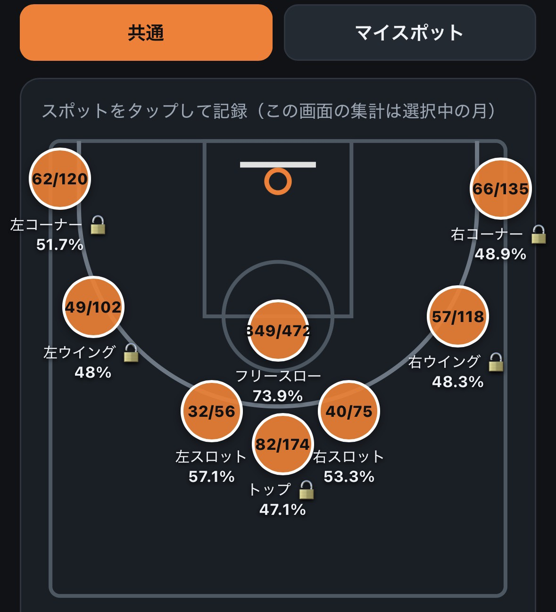
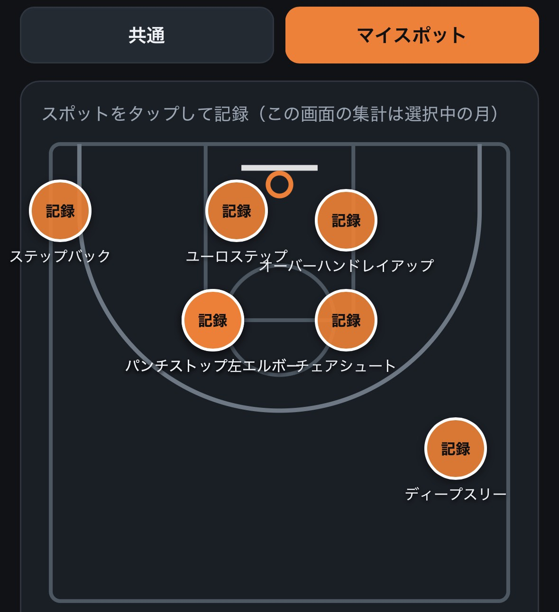
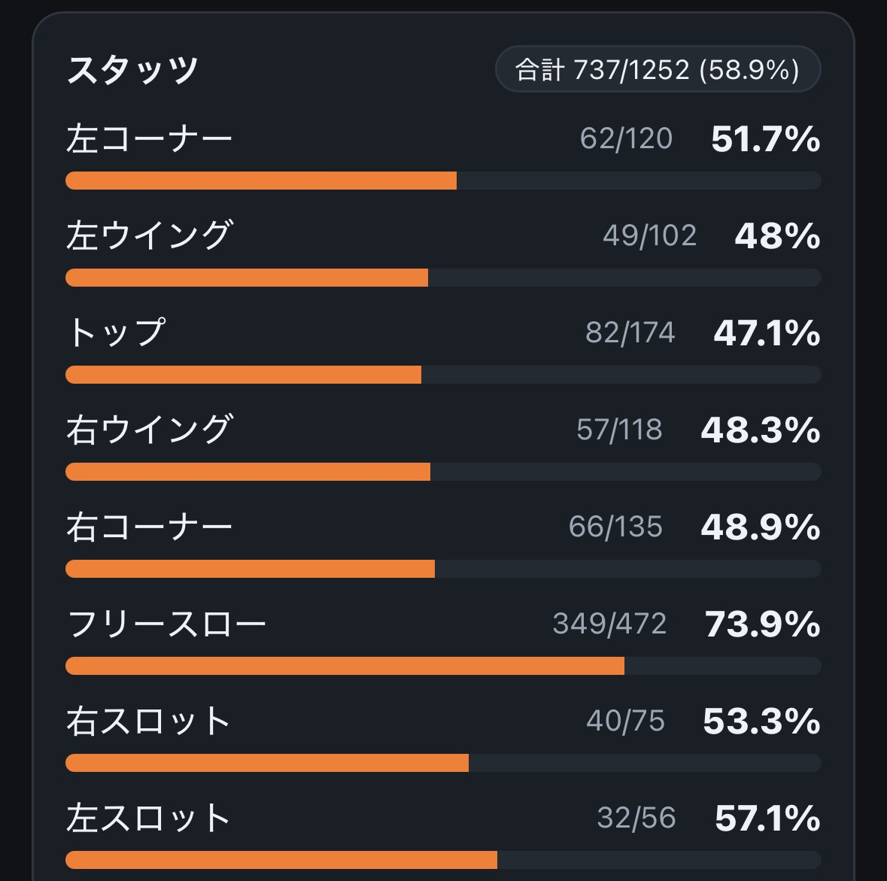
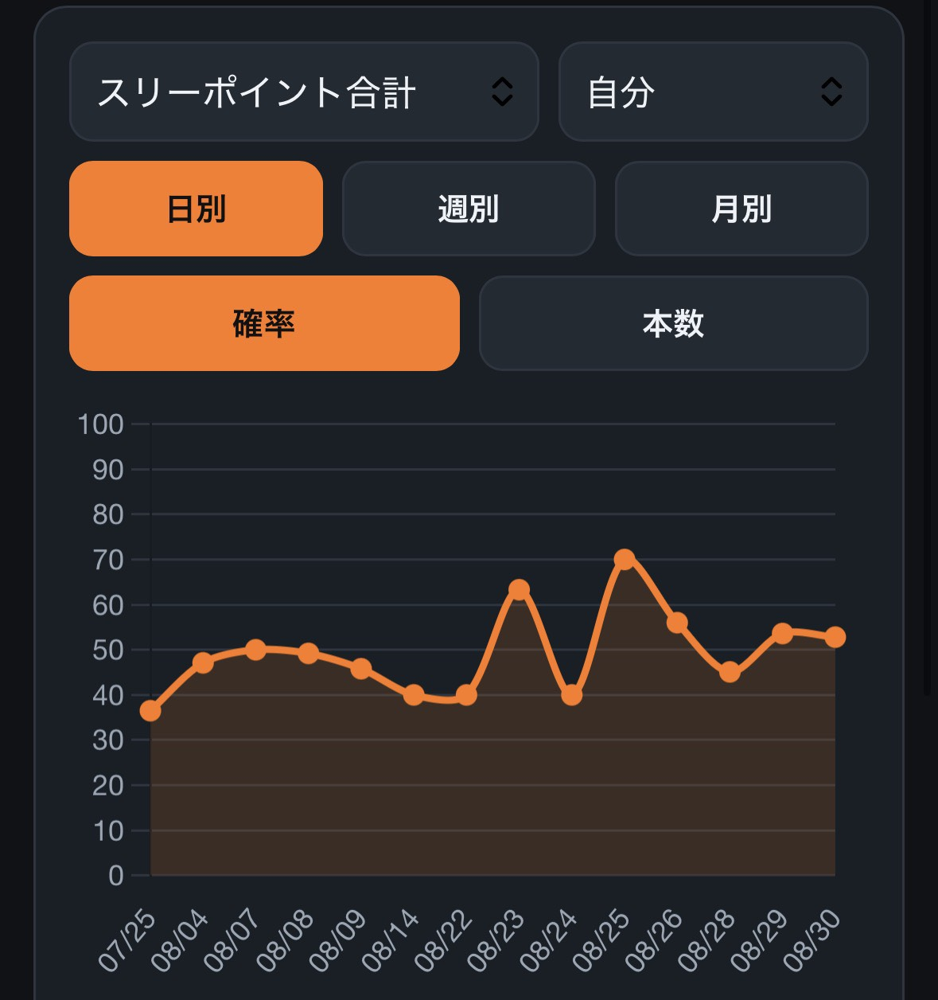
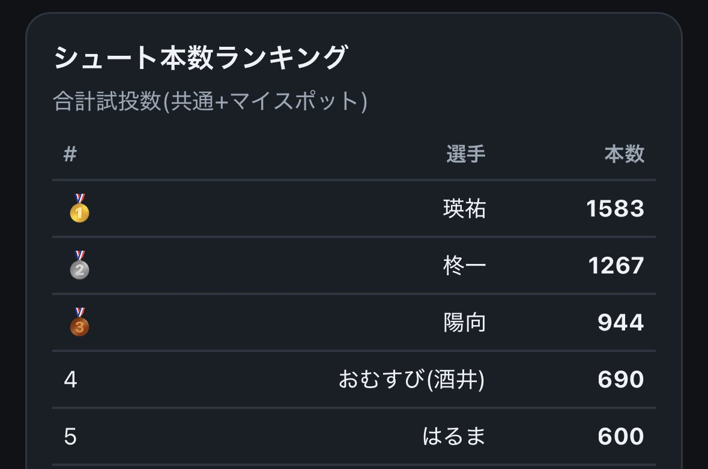
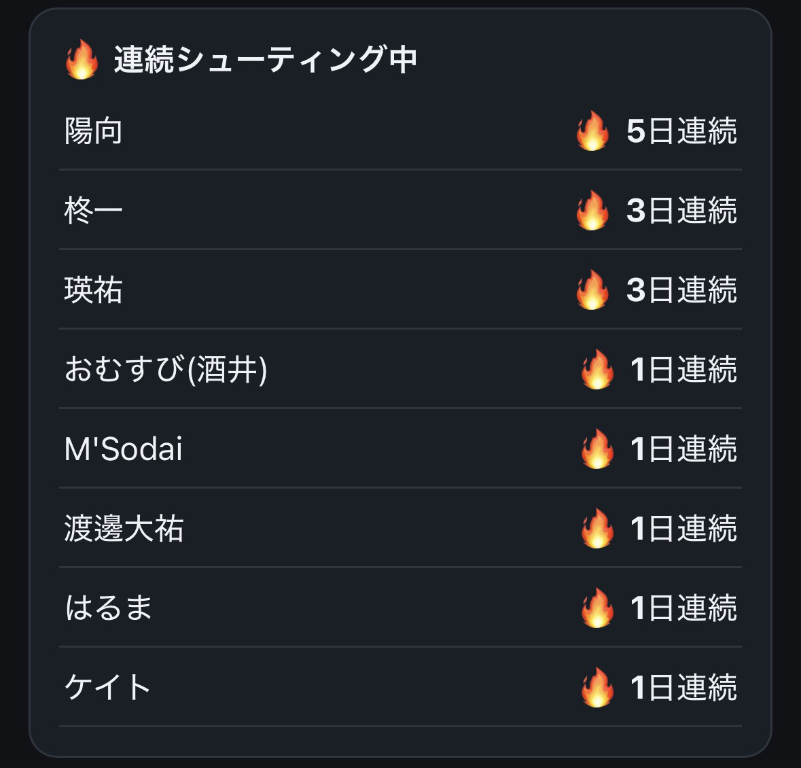
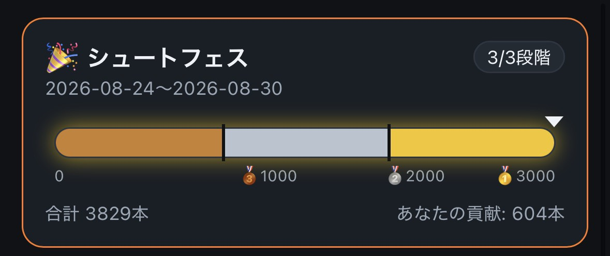

打った本数を、記録するだけ。
きみの成長が、ぜんぶ残る。
コートの上のスポットをタップして、打った本数と入った本数を入れるだけ。練習の合間にすぐ終わります。
体育館の電波が弱くても大丈夫。あとから自動で送信されるので、記録は消えません。
チーム共通のスポットのほかに、じぶんだけの「マイスポット」も追加できます。すきな場所・すきな練習を、じぶん専用に記録できます。


スポットごとの確率が自動で計算されます。月・週・日のグラフで、前のじぶんとくらべられます。
週の目標本数を決めて、達成をめざすこともできます。


本数ランキングと、連続で練習した日数🔥がみんなに見えます。たくさん打った人が、ちゃんとすごいと言われるアプリです。
確率のランキングは、じぶんの順位と1位の人だけが見えます。まわりと比べすぎず、じぶんの成長に集中できます。
仲間の連続記録が見えると、「今日はおれも打とう」って気持ちになります。


毎月さいごの1週間は「シュートフェス」。チーム全員の打った本数を合計して、みんなで目標達成をめざします。
1人の1本が、そのままチームの1本に。じぶんの練習がチームの力になります。

柊一と直接LINEを交換してもらう
トークに届くリンクからアプリを開く
そのまま記録スタート